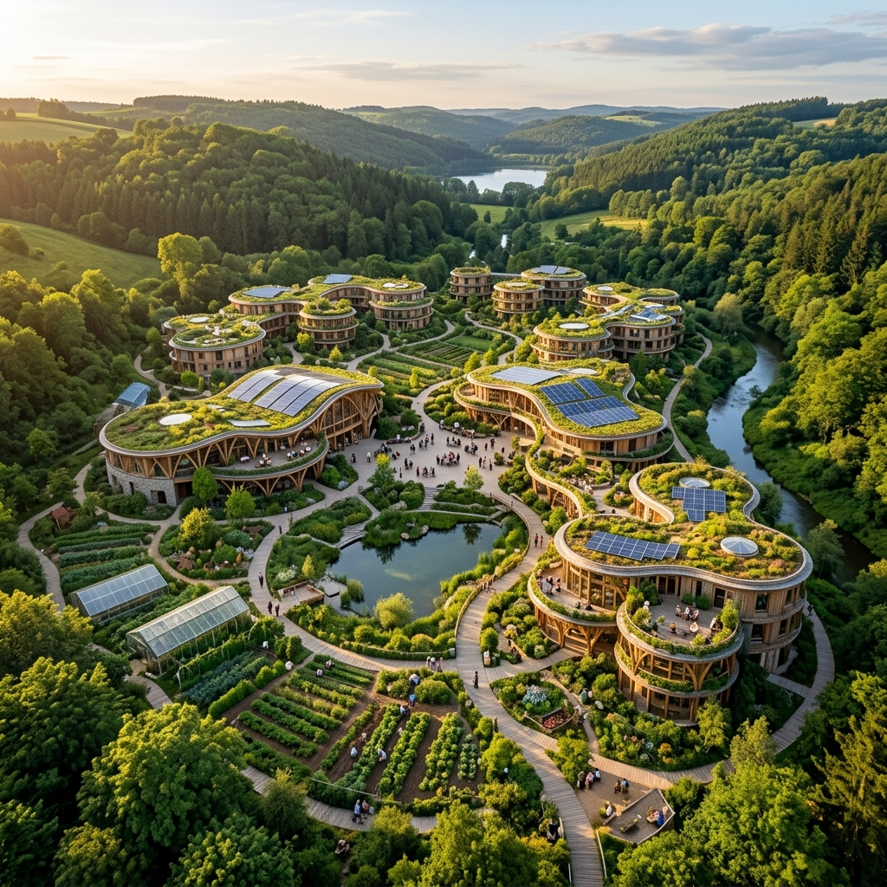
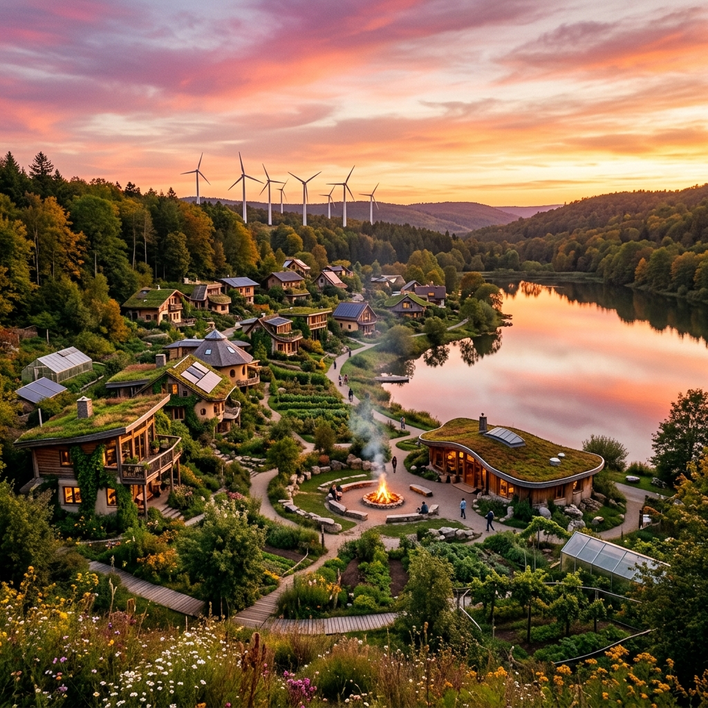

Laboratorio vivo de comunidades
Tecnología, tierra y comunidad en equilibrio. Counity es el espacio donde personas comunes construyen, en la práctica, nuevas formas de vivir.
La vivienda dejó de ser refugio y se convirtió en activo financiero. La tierra —que durante milenios fue bien común— quedó atrapada en títulos de propiedad que la arrancan de la comunidad.
No es solo un problema de precios. Es una desconexión profunda: de la tierra, entre personas, y de las decisiones sobre cómo queremos vivir.
Cooperativas de vivienda, land trusts, DAOs regenerativas, ecoaldeas autónomas. En distintos rincones del mundo, personas comunes están ensayando un nuevo modo de vivir.
La tierra no se posee, se custodia. De bien individual a bien colectivo.
Las decisiones no bajan: se construyen en conjunto, con la voz de todos.
El valor no se saca; se hace circular. Crear sin agotar.
Nadie puede solo. La fuerza está en el tejido entre personas y territorios.
Laboratorio vivo de comunidades que están construyendo, en la práctica, nuevas formas de habitar, organizarse y crear valor en relación con la tierra y entre las personas.
No es un producto. No es una empresa. No es una utopía futura.
Es un proceso en marcha.
Restaurar suelos, bosques, cuencas. La presencia humana como oportunidad de florecimiento.
Relaciones basadas en confianza, cercanía y reciprocidad. Lo común como práctica cotidiana.
Sociocracia, círculos de consentimiento y DAO. El poder circula, no se concentra.
Crear valor sin extraerlo. El trabajo de cuidado se reconoce, los recursos se redistribuyen.
Comunidades autónomas pero interdependientes, conectadas por principios comunes.
No es solo una idea con principios. Counity tiene una estructura diseñada para que la visión se vuelva práctica.
Donde la vida ocurre. Cada nodo adapta los principios de Counity a su contexto territorial, cultural y humano. Ninguno es réplica de otro.
Órganos vitales que investigan, desarrollan y sostienen dimensiones clave del ecosistema.
Custodia el propósito, articula decisiones estratégicas y mantiene la infraestructura común. No dirige: coordina.

Territorios donde la visión de Counity se encarna en la vida cotidiana. Comunidades diseñadas para la regeneración, la convivencia y la autonomía.
Bioarquitectura, materiales locales, diseño que integra la vida con el entorno natural.
Bosques comestibles, permacultura, restauración de ecosistemas como práctica comunitaria.
Espacios compartidos, gobernanza participativa, economía local. Autonomía con interdependencia.
Estamos construyendo las primeras comunidades. Si te imaginás viviendo así, queremos conocerte.
Quiero vivir en una LandNo construimos confianza prometiendo lo que no existe, sino mostrando el proceso real. Esto es lo que ya está sucediendo y lo que todavía está en camino.
Decisiones con gobernanza dinámica inspirada en sociocracia
Organización en círculos de trabajo con roles claros y rotativos
Decisiones documentadas de forma abierta
Co-Units activas, definiendo ámbitos y desarrollando capacidades
Protocolo Web3 en diseño para la futura DAO
Nodos habitados en territorio (en fase de formación)
DAO operativa on-chain
Tokens de reputación (PoP, PoSw) en diseño
Esta honestidad es parte del proyecto. Construimos en público, iteramos en comunidad.
No es para espectadores. Es para participantes. Elegí cómo querés ser parte.